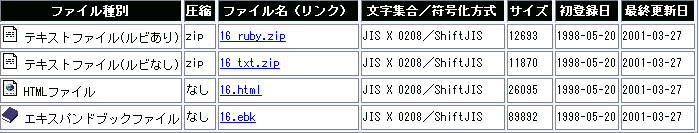

2. ダウンロードと解凍の仕方
3. 読書のヒント
1. 「ダウンロード」欄の見方
図書カードの「ダウンロード」欄は、次のような構成になっています。

◇ ファイル種別
ファイルの形式を表しています。
形式によって、読むために必要なソフトが異なります。主なものは、以下の３つです。
- テキスト・ファイル
【特徴】テキスト・データだけでできた、最もシンプルで軽いファイル形式です。ルビ（ふりがな）が入力されているもの、入力されていないものがあります。
【圧縮】ZIP圧縮（リンク登録作品を除く）
【道具】
◆解凍（復元）ソフト
（現在は、各ＯＳにZIP解凍圧縮機能が最初から付属しております。）
また、表示を読みやすくしたい方は、「青空文庫のXHTML, TEXTの読み方」、「青空文庫ＦＡＱ」もご一読ください。 - HTMLファイル
【特徴】インターネットのWWWの標準形式です。
【圧縮】なし
【道具】
◆いまお使いのウェブブラウザ。
また、表示を読みやすくしたい方は、「青空文庫のXHTML, TEXTの読み方」、「青空文庫ＦＡＱ」もご一読ください。 - PDF（Portable Document Format）
【特徴】印刷物のようにレイアウトされた文書をウェブブラウザ上でそのまま表示できます。一部プリントも可能です。
【圧縮】なし
【道具】Adobe Reader（フリーウェア）等
【入手先】
◆Macintosh・Windows：アドビシステムズ（株）のウェブサイト（http://get.adobe.com/jp/reader/）から。
（そのほか拡張子が「.ebk」「.ttz」など特殊なファイルのために必要なソフトについては、古いページですが「青空文庫読書ガイド」を参考にしてください。）
なお、拡張子が「.html」のファイルで、2002年5月以降に公開されたものは、ファイル種別がHTMLでなくXHTMLになっています。XHTMLは、基本的にはHTMLと大きな違いはありませんが、ブラウザのバージョンによって、見え方が異なる場合があります。詳しくは「新形式のHTMLファイルについて」を参照してください。
◇ 圧縮
圧縮の有無、および、圧縮されている場合は、圧縮方法を表しています。
圧縮されているファイルを利用する場合は、解凍が必要です。「なし」と書かれている場合は、解凍は必要ありません。
◇ ファイル名（リンク）
各形式のファイルに付けられている、実際のファイル名を表しています。
著作権有効の作品などで、青空文庫の外部にリンクしている場合は、リンク先のURLが示されています。
青空文庫のサイト内にあるファイルは、各ファイルを表す固有のID（数字）を用いたファイル名が表示されています。
例：1821_txt_6692.zip
1821_6672.html
-
ファイル名の先頭にある数字は、作品IDを示しています。図書カードの見出しにある「No.」と同じ数字です。
-
テキストファイルで「ルビあり」の場合は、作品IDの次に「_ruby」が続きます。
「ルビなし」の場合は、作品IDの次に「_txt」が続きます。
テキストファイル以外の場合は、「_ruby」「_txt」の区別はありません。
-
２つ目の数字は、ファイルに付く一連番号です。この数字が付いていないファイルもあります。
この数字は、データベースでファイルを管理する際に使われているもので、読む際には、特に意味はありません。
◇ 文字集合（符号化方式）
各ファイルで用いている文字集合および符号化方式を示しています。
-
文字集合(*)
青空文庫では、原則として JIS X 0208 と名付けられた文字集合を用い、一部で実験的に JIS X 0213 を用いています。文字集合欄には、二つのうち、どちらを用いているかを示します。
-
符号化方式
今のところ、文字集合に JIS X 0208、 JIS X 0213 のどちらを用いた場合も、符号化方式は ShiftJIS（JIS X 0213 の場合は、ShiftJIS の拡張規格）を採用しています。
ShiftJIS と ShiftJIS の拡張規格はともに、符号化方式欄には「ShiftJIS」と表示します。
ウェブブラウザやエディタなどで表示する際に文字化けするようでしたら、メニューから、「文字コード」「文字セット」「漢字コード」（お使いのブラウザやエディタにより、表記が異なっています）等の種類を、ここに示されているものに合わせてみてください。
JIS X 0208 の場合は、第1水準および第2水準の範囲内の漢字、および JIS X 0208 の範囲内に含まれる非漢字のみを使用し、それ以外の文字は外字として扱っています。
JIS X 0213 の場合は、第1水準、第2水準に加え、第3水準および第4水準の範囲内の漢字、および JIS X 0213 の範囲内に含まれる非漢字を使用し、それ以外の文字は外字として扱っています。
◇ サイズ
ファイルのサイズを、バイト(BYTE)単位で表しています。この値を1000で割ると、キロバイト(KB)単位に換算できます。
ダウンロードする際の所要時間の目安や、正しくダウンロードできているか確認する際などに利用してください。
◇ 初登録日
ファイルを青空文庫で初めて公開した日付を表しています。
◇ 最終更新日
現在のファイルが最後に更新された日付を表しています。
この日付が初登録日と異なっている場合は、初登録後、修正がおこなわれています。
2. ダウンロードと解凍の仕方
（※以下の記述は、古いＰＣのためのものでした。現在のＯＳのほとんどでは、ZIP解凍圧縮については最初から対応しています。）
WindowsおよびMacintoshの、ウェブブラウザからの一般的なダウンロードおよび解凍の仕方を紹介しています。
ダウンロード用ソフト等をお使いの場合は、各ソフトのマニュアルを参考にしてください。
（説明の内容は、WindowsはWindows9xおよびWindows Meを、MacintoshはMac OS 8.x、9.xを主な対象としたものです。）
◇ Windowsの場合のダウンロードと解凍
◇ Macintoshの場合のダウンロードと解凍
3. 読書のヒント
以下のページをご参照ください。
◇ 「青空文庫のXHTML, TEXTの読み方」（https://www.aozora.gr.jp/readingTEXT/index.html）
◇ 「青空文庫早わかり」（https://www.aozora.gr.jp/guide/aozora_bunko_hayawakari.html）
◇ 「青空文庫ＦＡＱ」（https://www.aozora.gr.jp/guide/aozora_bunko_faq.html）

このページに関するお問い合わせは info＠aozora.gr.jp 宛にお願いします